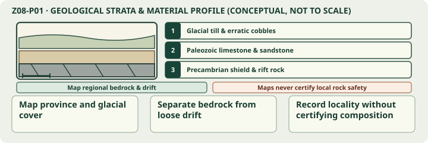

Z08-P01 · Rocks, minerals and materials · New manuscript
Minnesota Bedrock Provinces and Regional Geology
Orient field material observations using Minnesota bedrock provinces and glacial cover before interpreting loose surface stone.
When it applies · Upper Midwest fieldwork across Canadian Shield, Midcontinent Rift, Paleozoic bluff, and glacial-drift landscapes.
Equipment · Regional geologic map, hand lens, notebook, metric scale ruler.

Actions
- Consult Minnesota Geological Survey bedrock and surficial maps to identify the regional geologic province before inspecting local outcrops.[R01]
- Distinguish intact bedrock exposures from loose glacial cobbles because Pleistocene drift mixes rock types from distant northern source terrains.[R02]
- Record GPS coordinates, landform context, and outcrop orientation rather than inferring subsurface rock continuity from surface float.[R01, R19]
Failure recognition · Assuming a loose cobble represents local bedrock leads to false geological mapping and wrong material expectations.[R02]
Verify · Regional map unit, landform setting, and bedrock-versus-float status are written in field notes before recording any observation.[R01, R19]
Stop or change course · Stop rock sampling on unstable bluffs, active quarries, or restricted public lands, and never infer engineering suitability from regional maps alone.[R08, R16]
Evidence and editorial notes
- R01 · Minnesota Geological Survey (UMN) · Minnesota Geological Survey Maps and Regional Geology (Current web edition)
- Section: Geologic provinces and bedrock mapping · Conditions: Minnesota and Upper Midwest regional bedrock/glacial terrain
Support: Minnesota spans Precambrian Canadian Shield igneous/metamorphic rock, Midcontinent Rift volcanics, Paleozoic sedimentary strata, and Pleistocene glacial drift.
Limitations: Surficial glacial till frequently conceals underlying bedrock; local geologic maps and field verification remain necessary. · Conflicting evidence: Generalized state maps do not confirm outcrop-scale rock composition.
Editorial note: Bounds Z08 regional geology framing. · Specialist reviewer: Geologist and regional survey reviewer
Primary source · checked 2026-11-25 - R02 · Minnesota DNR · Minnesota Geology and Glacial History Overview (Current web edition)
- Section: Glacial drift and landscape materials · Conditions: Glacial till, moraines, outwash, and lake-plain deposits
Support: Glacial transport mixes erratics and cobbles from distant source formations across Minnesota soils and stream beds.
Limitations: Cobble location does not prove local bedrock origin or uniform internal stone integrity. · Conflicting evidence: None noted.
Editorial note: Separates erratic cobbles from bedrock strata. · Specialist reviewer: Quaternary geologist
Primary source · checked 2026-11-25 - R08 · National Park Service / eCFR · 36 CFR 2.1 Preservation of Natural, Cultural and Archeological Resources (Current CFR)
- Section: 36 CFR 2.1 natural resource collecting prohibitions · Conditions: National Parks, Monuments, and federal recreation areas
Support: Collecting rocks, minerals, fossils, wood, or natural specimens is prohibited on National Park System lands unless specifically authorized.
Limitations: Rules vary across USFS, BLM, state, tribal, county, and private lands; check the governing land manager before taking any sample. · Conflicting evidence: None noted.
Editorial note: Prevents unlawful federal resource extraction. · Specialist reviewer: Public-lands resource manager
Primary source · checked 2026-11-25 - R16 · Minnesota DNR · Rocks and Minerals of Minnesota Educational Guide (Current web edition)
- Section: Sedimentary limestone, sandstone, and shale permeability · Conditions: Southeastern Minnesota karst, bluff, and river-valley sedimentary strata
Support: Sandstone, limestone, and shale differ sharply in cementation, porosity, and fissility, governing weathering and cliff instability.
Limitations: Karst bluffs and fractured shales shed rockfall unpredictably; visual inspection cannot certify slope or load stability. · Conflicting evidence: None noted.
Editorial note: Covers Upper Midwest sedimentary rock hazards. · Specialist reviewer: Engineering geologist
Primary source · checked 2026-11-25 - R19 · USGS · Collecting Rocks: Rock Classes and Mineral Property Basics (USGS GIP)
- Section: Specimen documentation, scale, and locality recording · Conditions: Documenting geological specimens for reference or museum review
Support: Recording locality, host formation, metric scale, fresh vs weathered surface, and non-destructive traits preserves scientific value.
Limitations: A photograph or hand sample without locality and scale rarely permits definitive identification of fine-grained rocks. · Conflicting evidence: None noted.
Editorial note: Defines Z08 specimen voucher protocol. · Specialist reviewer: Curatorial geologist
Primary source · checked 2026-11-25
Source lineage · New manuscript (Z08 P16 regional geology) · Classification · New manuscript.